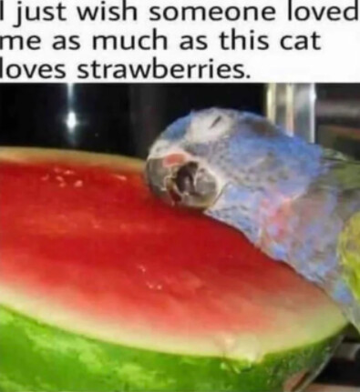

I’ve seen strongman modifiers on town so it’s not entirely impossible, but I see your point
Yes but…a strongman kill?
Well if it’s just a strongman modifier it would almost definitely be used on a factional kill if scum got it
Luxy
Pigeon
Prophylaxis
Arctic
These are probably my bottom four slots.
Do you have explanations for Proph and Arctic?
everytime I scroll down and see suggested topics with the signups thread saying 25/25 it just reminds me that Eli peaced out lmao
1 Like
Arctic is from Triplethree’s posts.
I explained Proph earlier.
1 Like
Ok, I’ll look for your explanation on Proph because I want to see if it matches what I thought I saw 
by the way, for when I flip give nobody credibility for townreading me and push on nobody for pushing on me unless it’s odd. The Townreading part goes for people like Luxy and Prophy and the pushing part goes for people like Arctic and Windward
Really?
Vote Count
| Accused | Voters | Number |
|---|---|---|
| Wazza | WindwardAway, Zerokito, Marluxion, Marshal | 4/10 |
| Marshal | clonedcheese, Galena | 2/10 |
| sulit | min, Arctic | 2/10 |
| thepigeonnyc | Prophylaxis | 1/10 |
| Galena | sulit | 1/10 |
| Zerokito | Hippolytus | 1/10 |
| Luxy | Rue | 1/10 |
| Not voting | Atlas, Liattac, Luxy, PokemonKidRyan, thepigeonnyc, Whysper, Wazza | 7 |
Rue
None of Rue’s content is exactly unfakeable, but it’s just… correct. It’s right. I had the same thoughts about Triplethree before I replaced into the slot. The read they made about a “self-aware wolf” looked pretty bad when the post was clearly a meme. That’s the thing with Rue’s slot. Pretty much everything they come up with is solid, but it’s not unfakeable. Take this in addition with the fact they lack a base of independent reads, and I really don’t know what to do with this slot. I wish they did more with the responses they got from their questions and incorporated this into some of their own reads which we could see. I can say that I want this slot to be town, but that’s not very useful.
I guess the biggest red flag is the way in which they’ve consistently complained about the thread state and used it as an excuse not to post content, despite the fact that the state of the thread only impedes real-timing. There’s no real reason they couldn’t have Iso’ed people and thus there’s a distinct lack of independent solving. That however doesn’t change the fact that what they’ve given are well-thought out and inquisitive takes. I’d say this is probably a villager but I want them to give us more so I can be sure.
Further notes
Quite liked this post too. Shows an extra level of nuance in that Rue visibly crosschecked Atlas’s reads to his wagon and using that to investigate his mindset.
Pointed out the same thing as me here when investigating Atlas’s reads. Again, this isn’t unfakeable, it’s just villagery because it takes an extra level of investigation that wolves are less likely to have as they’re less prone to picking up on smaller details due to the fact they already know the alignments of players.
The second line there is unlikely to come from a wolf, because a wolf would not be questioning how to encourage Eli to create content as they would not want him to be able to do so (if he’s a villager) because it’s beneficial for wolves if he is not able to clear himself. As partners, it’s likely they would do this in scum chat instead.
As I said earlier, I don’t think Rue is likely to make this post as a wolf just before EoD when the wolves had decided/were deciding to, presumably, anticlaim kill Vulgard. Not high confidence, but it’s worth noting.
Possible concern
I was kind of weirded out by the fact that Rue claimed they were trying to find out what people thought of my slot because they scumread my predecessor, but they specifically asked for wolfreads and were unable to elaborate why. This is quite leading and isn’t what I’d expect from someone genuinely trying to find out what people think about my slot.
@Rue Were you a wolf in this game?
1 Like
Yes because you’ve made me think about Prophy and Luxy and now that I think about it, I feel like if you give them credibility when I flip Town, then it’d be easy for Scum to Townread me. Scum know what I am, Town do not.
I read through about 200 posts beforehand, then decided it wasn’t worth listening to all the arguing
Hey people
Yes.
I feel like you should give my slot due diligence. You scumread my predecessor at a very early point in the game, and I don’t think you’ve really considered my slot much since then.
Acknowledged
I’ve found Proph’s posts to be weird in a way that I can’t quite articulate. I know it sounds like I’m blatantly shading his slot but I actually think he’s a bit wolfier than Aelin was. I get a vague sense that Proph picked up roughly where Aelin left off despite not reading the thread, but I can’t really say it’s weird since I know Aelin could’ve just left notes for him in her rolecard (and I don’t want to get into angleshooting, I’m just saying it’s possible so I don’t want to immediately assume it’s just because Proph has access to wolfchat or something).
I think I need to iso Proph again though and I do have a case separately on aelin that I might elaborate on later

1 Like